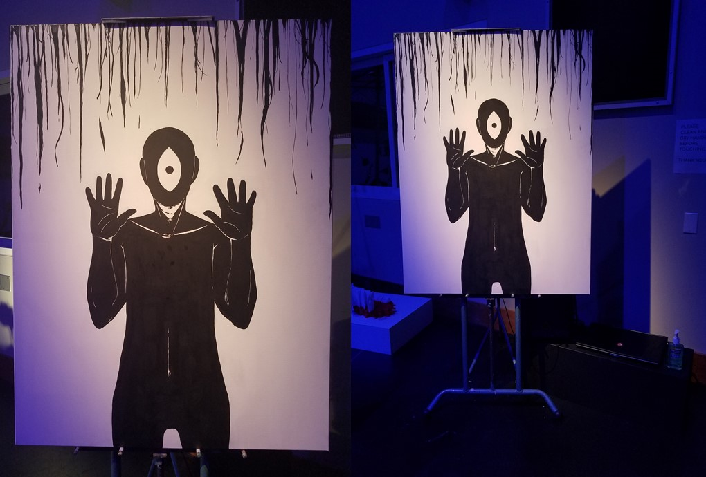
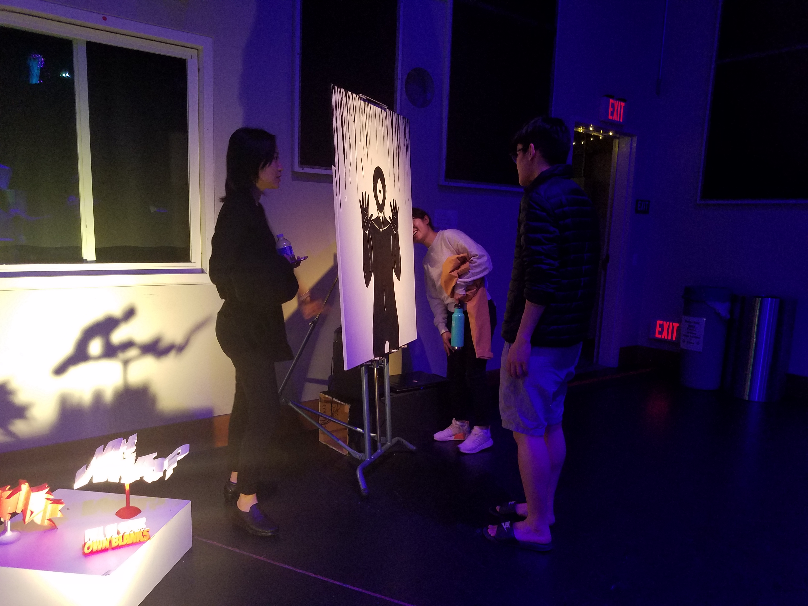
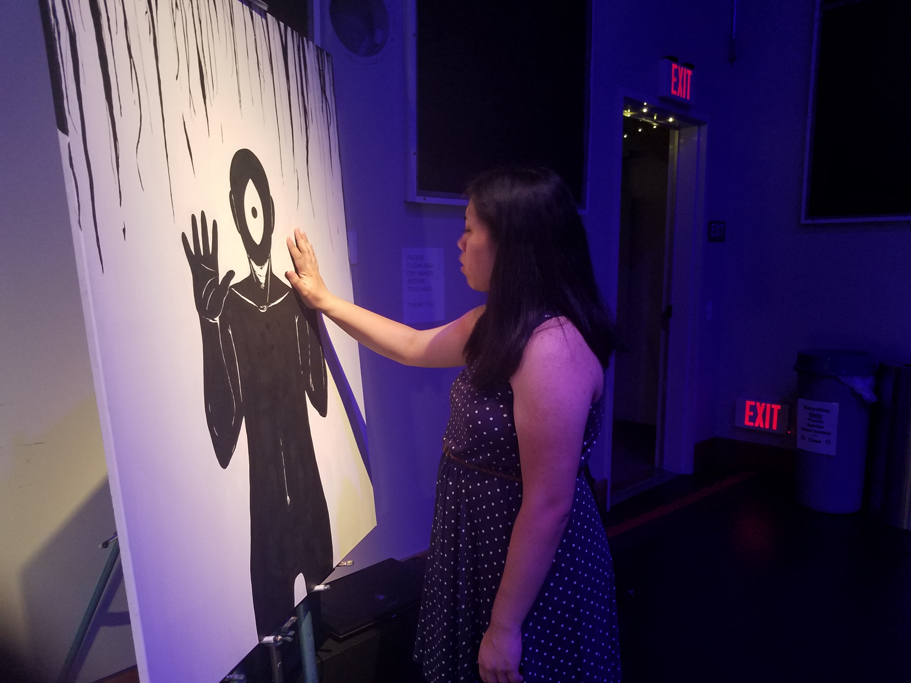
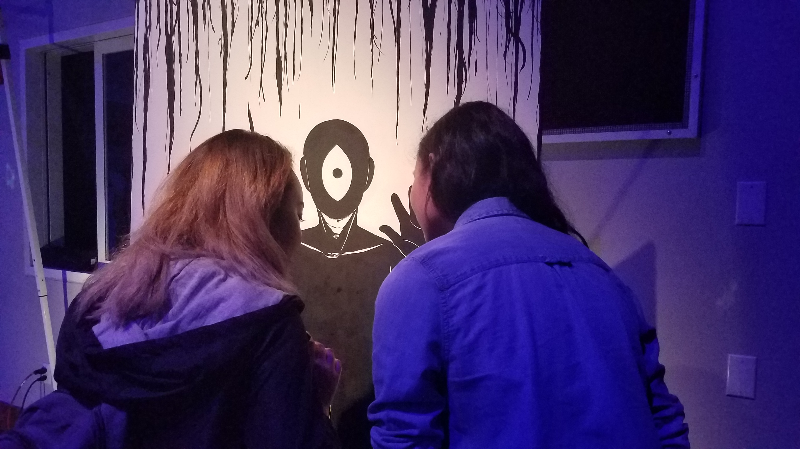
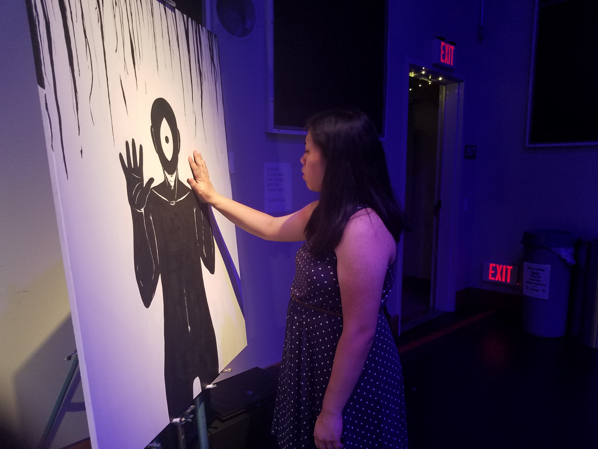
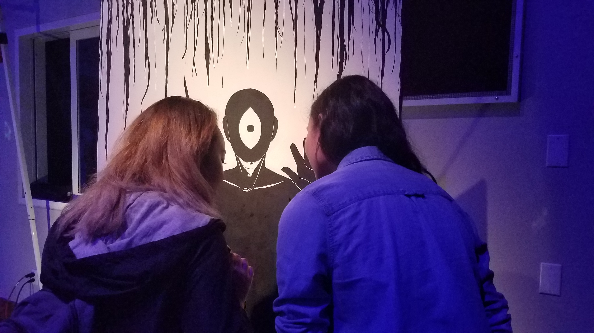
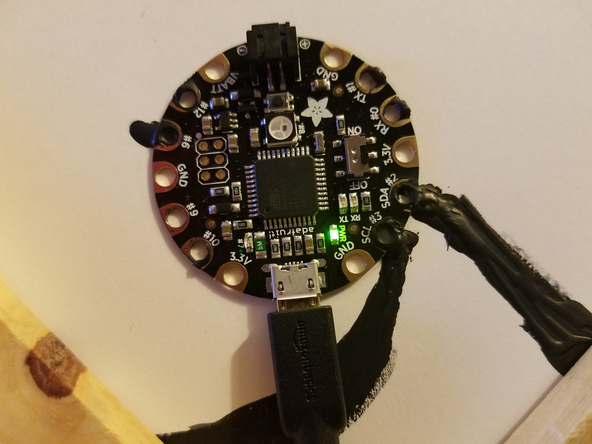

INEXORABLE
Stephanie Cacal
German philosopher, Friedrich Nietzsche, stated "Whoever fights with monsters should see to it that he does not become a monster in the process. And when you gaze long into an abyss the abyss also gazes into you."
Humans beings are essentially intelligent creatures capable of doing and achieving many things. However, we are also complex species; often times unpredictable and self-centered. We are constantly morphing physically, mentally, and socially. Our ideas and morals change, as well as our perceptions of what is considered good and what is considered bad; never fully able to comprehend the many differences and conflicted minds that accumulate this world.Humans are trapped in an endless gray cycle. Rejecting and fighting against those we identify as monsters and constantly struggling not to one day become those monsters. Never realizing, or even just denying the fact, that it is just so easy to already become said monsters in another's eyes.
<DMA::iRl
INEXORABLE was displayed on April 27th, 2019 at the Hammer Theatre Center in Downtown San Jose. The piece was showcased as part of a group gallery show, "DMA::iRl".
DMA::iRl from Stephanie Cacal on Vimeo.
Artist Statement
Nietzsche once stated, “He who fights with monsters should look to it that he himself does not become a monster and if you gaze long into the abyss the abyss also gazes into you.”
I find my practice encompassing not only a lot of my personal experiences, but also the interpersonal interactions between other individuals and communities. More often than not, I would find myself integrating these subjects with the words of Friedrich Nietzsche. Nietzsche had described humans as having complex, unpredictable minds and emotions. I am interested in conveying that sentiment in almost all my artworks solely because as a human, I can so easily be swayed by forces from the world around us.
As a digital artist, I mainly focus on 3D modeling, Virtual Reality, digital illustrations, and 2D animation using a variety of programs However, I do not stray from traditional mediums as I often enjoy incorporating technology with canvas painting.
I visualize many of my thoughts into my pieces, sometimes depicting dark scenes with disfigured, pitch-black humanoids. While I try to make my works rather straightforward, my main goal isn’t being concerned about whether my viewers understand the scene entirely or not,but rather I want them to grasp a sense of emotion. Pieces such as my VR installation ISOLATION, 3D installation Mercurial, and animated 3D painting The Hours of Grief Lead a Lifetime of Reflection; strive to portray raw human emotions. The former placing the view in the center of a dark, enclosed space while, from an opening of the ceiling, a giant, black figure with a single eye looms over looks down on them. The viewer can do nothing but stare either at the caged hallways surrounding them or at the figure above.
With that purpose in my mind, my works will also address sometimes controversial topics that may be uncomfortable or offensive. I have created works based on subjects such as depression, anxiety, and death. The Hours of Grief Lead a Lifetime of Reflection embodies the disorienting and suffocating feelings of losing a loved one that had been taken too cruelly and how often times describe how grief can bring upon unwanted guilt and self-deprecation.
While my platform of media is very flexible, I stay consistent in exploring the faults of humankind. I work to push myself to view things from different perspectives but remain adamant in displaying the innate feelings that humans all seem to share.
INEXORABLE was displayed on April 27th, 2019 at the Hammer Theatre Center in Downtown San Jose. The piece was showcased as part of a group gallery show, "DMA::iRl".
 



Conception
I created an interactive painting that will projects the aphorisms from Friedrich Nietzsche's book, "Beyond Good and Evil." The painting is a 36x48 inch canvas with a figured painted onto it using conductive paint. When touched, the Max program will activate the sounds of the verses which will be spoken by me.
In the last 5 years of my life, I gave a lot of thought in the ways that the human mind works the varing ways they are displayed when incorpated into a communal or societal environment. Growing up in the Bay Area as an Asian American, I've had many encounters of ideas and perspectives that both relate and conflict from each person/group I've met. What was considered good and what was considered wrong would also start to muddle especially when religion and morals were involved. I started to question whether how we think was innate or just man-made; adopting and evolving until it slowly became natural to us. I wanted to see what was in our control and what was not; what was our own or what we simply followed because the majority says so.
When I looked into Friedrich Nietzsche's writings, they provided not only a good incite to what I was questioning but a good basis to the start of my conceptual idea for many of my works to come. INEXORABLE started with Nietzche's famous quote, "If you starte into the abyss, the abyss will stare into you." In my intepretation of the quote, I believed it was how humans are both what they consider to be good and evil, and will become what they hate most when pushed hard enough. I believed there is maddness in all of us but we're too restrained to act upon it.
While the majority of the audio are quoted verses of Nietzsche's book, there is one audio clip that provides my view on the human ideaof morality. The goal I wanted in INEXORABLE was for the viewer to listen to that clip and choose whether to reflect or not on what my belief is. If they disagree, that is up to them. Providing different thoughts also brings more oppotunities to explore our minds further.
In the Spring of 2018, I had recently came across working with conductive paint. During my early years as an artist, I enjoyed working in traditional mediums especially painting and drawing. I found the opportunity in using paint as a substitute for wires as a way to bring a more creative way in displaying and elevating both something traditional and digital. The wires themselves become the art. I wanted the idea of touch to be a prominent aspect of the piece. I wanted to create a interpersonal relationship between the piece and the viewer. The sense of physical touch and feelings/emotions have an instinctual connection that something simple as a figure staring out to the viewer can invoke something more powerful.
The Process
Medium: Interactive Painting via conductive paint
Programs: MSPMAX, Premiere Pro, Arduino
Materials use:
-BEAR Conductive paint
-Adafruit FLORA
-36x48” canvas
-paint brushes and pallet knife
-pc and usb/hdmi cables
For the design of the painting, I wanted to paint something that would give the impression or subtle message that could prompt the viewers to touch the painting. However, I also whated the image to reflect not only an androgynous figure to reflect all humans, but also something that give my personal touch to it. A lot of my works are based around dark imagery and almost always incorperates the symbol of an eye. In the end, I painted the dark figure to be relatively the same size as me, with palms out as though they are standing infront of a mirror. I wanted the viewer to place their own hand on the figure's hand like a reflection.
Originally the piece was to be a two-parter, incorperating not just conductive paint but also projection mapping. The was to be a projection of an eye located in the white of the figure that would blink and move around; to give the dark figure in the painting more life. There would also be a projection of distorted animations in the negative space around the figure. However, the idea was scrapped later on as I believed that the projection would conflict with the painting. As a painting in gallery, there was already the issue of getting viewers to touch it. Having the projection would not only further the viewer away from making physical contact with the painting but would also take away the personal relationship I want to create with the viewer and the audio.
Once the projection mapping was omitted to the piece, the painting itself required some redesigns. While the figure stayed the same(aside from painting a black dot as the eye socket), the negative space needed work on in order to not make the image so empty. There were many designs and alterations before I decided to create tendrils that would come and drip down onto the paint. These tendrils would also activate sound when touched.
For the audio, I read Nietszche's "Beyond Good and Evil," I handpicked and chose 21 aphorisms that reflected on ideas of morality and ones that I belived would invoke a sense of emotion with the viewer. The audio was then editted and enhanced using Premiere Pro and imported into MSP/MAX. The code is set so that each audio clip revolves in a circle. When touched, it plays an audio clip until it is touched again and then plays a new one. The audio continues to play even after the viewer lets go and stops once the clip is done. Holding the touch longer increases the volume of the audio.
The paint was wired to an Adafruit FLORA and was coded so that the paint was keyed to the 's' button on the laptop. This was also the case for the MAX code and that the 'S' button activated to sound.